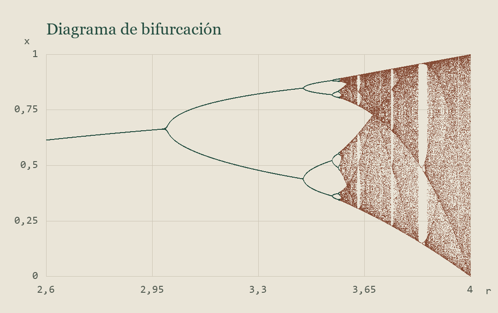

Detective de trayectorias
Observa los valores después de las primeras iteraciones. ¿Qué patrón sigue la trayectoria?
Teoría General de Sistemas
¿Qué pasa cuando aplicamos la misma regla a dos estados iniciales casi idénticos? Explora cuándo sus trayectorias se acercan, se repiten o se separan.
Abrir el simulador
Fundamentos
El estado de un sistema dinámico cambia con el tiempo. En un modelo discreto se observa a intervalos, como una generación tras otra. En un modelo determinista, el estado actual y la regla fijan el siguiente estado (Herrera Díaz & Conde, 2001).
En un régimen caótico, dos estados iniciales muy cercanos pueden generar trayectorias que se separan con el tiempo. Así, una pequeña imprecisión al medir el estado inicial puede limitar la predicción (Campos, 2002). Una trayectoria irregular puede surgir de la dinámica interna del sistema (Lombardi, 2001).
El mapa logístico permite estudiar cómo cambia un sistema con cada iteración. En sistemas abiertos, como las organizaciones, también interesa cómo influyen las interacciones internas y el entorno (Rodríguez Devis, 2002). Para identificar caos en un caso concreto hay que examinar su dinámica.
En ingeniería química, el flujo puede deformar y separar trayectorias vecinas dentro de un fluido. Esa dinámica ayuda a entender cómo se distribuye una sustancia durante la mezcla. Herrera Díaz y Conde (2001) revisan la relación entre el caos, el flujo y la mezcla.
Veritasium en español presenta la ecuación y muestra cómo cambia el comportamiento al variar r.
Ver en YouTube ↗Práctica
Cambia r y los estados iniciales. El eje horizontal muestra el paso n y el vertical, el estado x.
| Paso | A | B |
|---|
Con el ejemplo «Caótico», ¿cuál de estas observaciones es esperable después de varias iteraciones?
Juegos
Observa los valores después de las primeras iteraciones. ¿Qué patrón sigue la trayectoria?
Asocia cada descripción con el concepto que le corresponde.
Evaluación
Responde cinco preguntas y revisa la explicación de cada una.
Brayhan Alejandro Gómez Vega
Ingeniería de Sistemas · Segundo semestre
Universidad Simón Bolívar · sede Cúcuta
Teoría General de Sistemas · 2026-2
Gráficos calculados a partir del mapa logístico. Se usó OpenAI Codex como apoyo para redactar y programar el OVA.
Ficha técnica del proyecto (PDF)